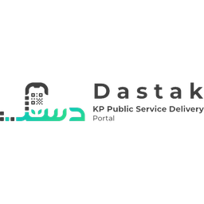
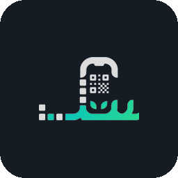
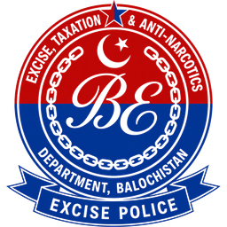
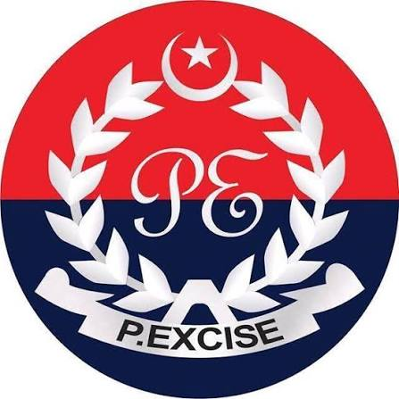

Excise services by province / region
Pakistan’s Excise systems are separate by province and ICT. Pick your region below for official portals and the main online services people use.


KPKKPK / Dastak
Khyber Pakhtunkhwa digital services linked from the Dastak portal.
- Digital arms licensing (Dastak)
- Apply / renew online
- E-payment & tracking
- NADRA biometric steps
Sindh Excise
Official Excise, Taxation & Narcotics Control Department of Sindh online services.
- Online vehicle verification
- Verification by CNIC
- Number plate check
- Tax calculator & challans

BalochistanBalochistan Excise
Excise, Taxation & Anti-Narcotics Department online vehicle and tax services.
- Online vehicle verification
- Online tax payment
- Number plate check
- Tax rates & calculator
Punjab Excise
Vehicle verification, token tax clues, e-smart card services, e-Pay payments, and route permit.
- MTMIS vehicle verification
- E-Smart card / VRC services
- Smart card tracking
- e-Pay Punjab payments
- Route permit (PDTG)
Islamabad Excise
Excise & Taxation Department, ICT — registration, verification, smart card, and challan tools.
- Check vehicle detail
- Online registration / transfer
- Smart card status
- Challan verification

GilgitGilgit Excise
Excise & Taxation Department, Gilgit-Baltistan — registration, verification, and token tax.
- Motor vehicle registration
- Online vehicle verification
- Vehicle search
- Token tax
See every district badge under its province, with search for city names and plate-style codes.
Browse all districtsWhy regions are separate
Each province and ICT keeps its own vehicle and Excise databases. A Punjab MTMIS search will not show a Karachi-registered car, and Islamabad records are separate from Punjab. Always use the portal that matches the vehicle’s registration region.